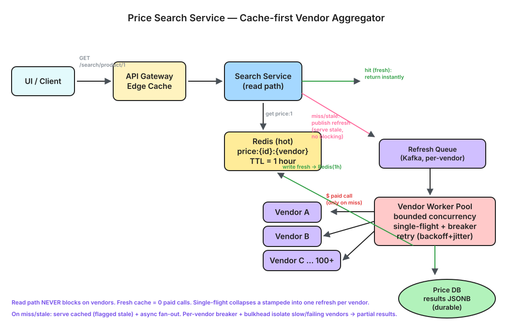

Aggregate prices for a product from many vendor APIs and return them to the front-end — while honoring 1-hour data freshness, minimizing expensive vendor calls, and scaling to 100+ vendors.
productId = 1, "Travel Insurance"). The service queries multiple vendor APIs (A, B, C…), aggregates their prices, and returns a unified list to the front-end.Functional
GET /search/product/{id} returns the latest known price from every vendor for that product.Constraints given in the brief
| # | Constraint | Design Implication |
|---|---|---|
| 1 | Vendor data is valid for 1 hour | Cache with 1h TTL; never call a vendor if a fresh value exists. |
| 2 | Each vendor API call costs money | Minimize calls — cache-first, dedupe, batch, refresh lazily. |
| 3 | (Challenge) scale to 100+ vendors | Async fan-out, bounded concurrency, per-vendor isolation, partial results. |
Non-Functional
| Property | Target |
|---|---|
| Read latency (cache hit) | < 50 ms p95 |
| Read latency (cold, partial) | return cached + refresh async; never block on all vendors |
| Availability | 99.9% — degrade gracefully if some vendors are down |
| Vendor cost | Minimize redundant calls; aim < 1 call/vendor/product/hour |
The teammates' first cut: an API that takes a product id, synchronously calls every vendor, writes the result to a DB, and returns it.
UI --GET /search/product/1--> SearchService
SearchService --1/A--> Vendor A
SearchService --1/B--> Vendor B
SearchService --1/C--> Vendor C
SearchService --save {A:$100,B:$120,C:$110}--> DB
UI <-- {A:$100, B:$120, C:$110} -- SearchService
Request
GET /search/product/1
Response
{
"productId": 1,
"results": [
{ "vendor": "A", "price": 100, "currency": "USD", "asOf": "2026-06-04T10:00:00Z" },
{ "vendor": "B", "price": 120, "currency": "USD", "asOf": "2026-06-04T10:02:00Z" },
{ "vendor": "C", "price": 110, "currency": "USD", "asOf": "2026-06-04T09:58:00Z" }
],
"stale": false
}
GET with no side effects; safe to put behind a CDN/edge cache with a short TTL.asOf lets the client reason about age; stale flags a degraded (cached-while-refreshing) response.?sort=price&limit=20 and stream the cheapest first.POST /vendors registers a vendor adapter (endpoint, auth, rate limit, cost) so new vendors are config, not code.
+-----------------------------+
UI / Client --GET--> | API Gateway / Edge Cache |
+--------------+--------------+
v
+---------------------+ cache hit (fresh)
| Search Service |---------------------------> return
| (read path, fast) |
+----+-----------+----+
| |
read | | on miss/stale: enqueue refresh
v v
+-------------+ +------------------------+
| Redis | | Refresh Queue (Kafka) |
| (hot TTL) | +-----------+------------+
+------+------+ |
| v
| +-----------------------------+
| | Vendor Worker Pool |
| | (bounded concurrency, per- |
| | vendor adapter + breaker) |
| +-----+------+------+---------+
| | | |
v v v v
+-------------+ VendorA VendorB VendorC ... (100+)
| Price DB | <--- workers write fresh prices
| (jsonb) |
+-------------+

⬇ Download Interactive Diagram (.excalidraw) ↗ Open in Excalidraw
price:{productId}:{vendor} → {price, currency, asOf} with TTL = 1h. A product-level aggregate price:{productId} can also be cached for the hot read.stale) and enqueue a refresh for only the stale vendors — don't block the user.| Layer | Role | TTL |
|---|---|---|
| Edge/CDN | Absorb repeated identical reads | seconds–minutes |
| Redis (hot) | Per-vendor + aggregate prices | 1 hour |
| Price DB (jsonb) | Durable source of truth, survives cache flush | persistent |
Constraint #2 says every vendor call costs money. The whole design optimizes for fewest paid calls:
stale.
Refresh event {productId:1, vendors:[stale...]}
|
Kafka topic (partitioned by vendor)
|
+----+----+----+ ... (bounded worker pool)
| | | |
wA wB wC w... each: timeout + retry(backoff+jitter) + breaker
| | | |
+----+----+----+--> write Redis(1h) + DB(jsonb) --> rebuild aggregate
Worker Model — pool, not 1-per-vendor
Instead, run a fixed, elastic pool of workers (e.g. 20–50). They pull jobs off the queue; each worker handles whatever vendor job it grabs next. This is bounded concurrency — it decouples the number of vendors from the number of workers.
| 1 worker per vendor | Worker pool (chosen) | |
|---|---|---|
| 100 vendors | 100 threads, mostly idle | ~30 workers, always busy |
| 1000 vendors | 1000 threads — falls over | add workers, not threads-per-vendor |
| Resource use | Wasted memory + connections | Bounded, predictable |
| Scaling knob | Pinned to vendor count | Pool size + Kafka partitions |
With 30 workers and 100 vendors, all 100 vendor-calls queue up and 30 run concurrently at any instant; as one finishes, that worker pulls the next. Partitioning the Kafka topic by vendor keeps each vendor's jobs ordered and lets you scale noisy vendors independently — workers remain a shared, elastic pool.
| Failure | Mitigation |
|---|---|
| Vendor slow / timeout | Per-call timeout + deadline; serve cached, refresh later. |
| Vendor down / erroring | Circuit breaker opens; stop wasting paid calls; retry with backoff + jitter. |
| Transient errors | Bounded retries with exponential backoff & jitter (avoid thundering herd). |
| Duplicate refresh events | Idempotent writes keyed by {productId,vendor,window}; single-flight dedupe. |
| Poison messages | Dead-letter queue + alerting after N failures. |
| Cache outage | Fall back to DB (jsonb) as source of truth; rebuild cache lazily. |
Why a relational store (PostgreSQL) as the source of truth
The data is small, structured, and read-dominated — a product keyed to a handful of vendor prices. The access pattern is a point lookup by product_id. That makes a single, well-understood relational DB the durable source of truth, with Redis as the hot cache in front.
| Option | Fit | Verdict |
|---|---|---|
| PostgreSQL (chosen) | Point lookups by PK, JSONB for the vendor list, transactions for selective per-vendor upserts, cheap to operate | ✅ Durable source of truth |
| Redis | Sub-ms reads, native TTL = the 1h freshness window | ✅ Hot cache, not durable store |
| Cassandra / DynamoDB | Great if write-throughput/partitioning dominated, but here volume is modest | ⚠️ Overkill; use only if products explode to billions |
| Elasticsearch | Only if the brief becomes fuzzy text search over products | ⚠️ Different problem; not for price lookup |
Schema decision — why both an aggregate row and a per-vendor table
The brief suggests a single product-keyed row with a JSONB blob of vendor prices. That serves the hot read in one lookup, but it can't express per-vendor freshness or selective refresh. So we keep both:
-- Aggregate (matches the brief) CREATE TABLE product_prices ( product_id BIGINT PRIMARY KEY, results JSONB, -- [{vendor, price, currency, asOf}, ...] updated_at TIMESTAMPTZ ); -- Per-vendor (for selective refresh, cost & freshness) CREATE TABLE vendor_prices ( product_id BIGINT, vendor_id TEXT, price NUMERIC, currency TEXT, fetched_at TIMESTAMPTZ, PRIMARY KEY (product_id, vendor_id) );
results JSONB serves the hot read in one row lookup.vendor_prices.fetched_at drives the 1h TTL decision and selective refresh.fetched_at lets a scheduler find soon-to-expire hot products to pre-warm.Cache hit (fast, no vendor calls)
UI --GET /search/product/1--> SearchService
SearchService --get price:1--> Redis (fresh, <1h)
UI <-- {results:[A,B,C], stale:false} -- SearchService
Cache miss / stale (serve cached + async refresh)
UI --GET /search/product/1--> SearchService
SearchService --get price:1--> Redis (miss or stale)
SearchService --publish refresh{1,[A,B,C]}--> Kafka
UI <-- {results: cached-or-empty, stale:true} -- SearchService (no blocking)
Kafka --> Workers --call--> VendorA / VendorB / VendorC
Workers --write--> Redis(1h) + DB(jsonb) --> rebuild aggregate
(next read is a fast, fresh cache hit)
| Choice | Pro | Con |
|---|---|---|
| Async refresh (serve stale) | Fast, cheap, resilient | Can briefly return up-to-1h-old prices |
| Sync fan-out | Always freshest | Slow, expensive, fragile (naive design) |
| Per-vendor cache | Selective refresh, less cost | More keys/bookkeeping |
| Pre-warm hot products | No user-facing miss | Spends calls on possibly-unread data |
| Single-flight | Kills cache stampede cost | Slight added coordination/latency on miss |
App checks cache first; on miss it loads the source and populates the cache.
Serve slightly old data instantly while refreshing it in the background.
Collapse many concurrent identical refreshes into one underlying call.
Stop calling a failing vendor for a cooldown so you don't waste cost/time.
Isolate resources per vendor so one bad vendor can't starve the others.
Dead-letter queue holding messages that repeatedly failed processing.
Time-to-live; here, 1 hour of validity before a price must be refreshed.
Increasing, randomized retry delays to avoid synchronized retry storms.